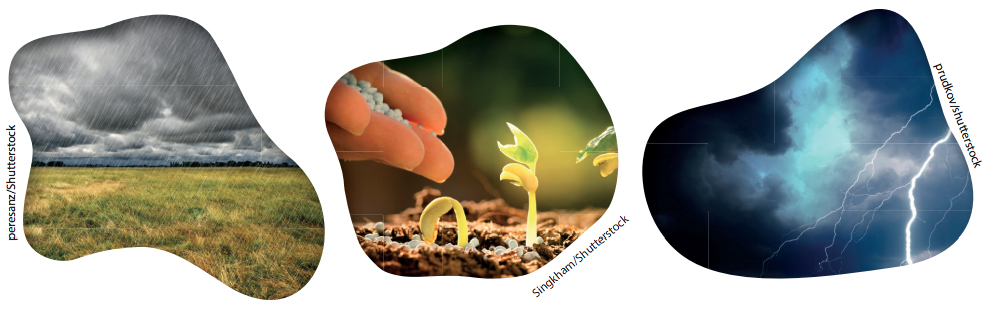
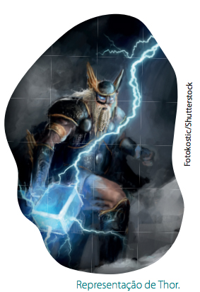

Neste capítulo
Introdução à Filosofia
- Aspectos da mitologia grega
- Maneiras de pensar baseadas em mitos
- Influência dos mitos na produção do conhecimento
- Os mitos na atualidade
Introdução à Filosofia
O que é Filosofia?
Onde ela surgiu? Ou melhor, será que ela surgiu em algum lugar?
Caso tenha surgido em algum lugar, como isso aconteceu?
Se você não sabe as respostas, terá a oportunidade de aprimorar o seu conhecimento, pois descobrirá muitas ideias a respeito da Filosofia. Aliás, descobrir é uma ação muito utilizada nessa disciplina e está bastante ligada à ideia de curiosidade, investigação, procura, crítica, concordar e discordar, pensamento, entre outras.
Para que serve a Filosofia?
Por que é preciso estudá-la?
Essas são algumas indagações que podem ser feitas quando se inicia o estudo da Filosofia. São interrogações naturais, pois é comum que se questione sobre algo que não se conhece ainda, ou, pelo menos, que não se conhece tão bem a respeito. E para responder a esse tipo de pergunta, é preciso pensar.
Não se pode pensar em nenhum homem que não seja também filósofo, que não pense; precisamente porque o pensar é próprio do homem como tal.(GRAMSCI, Antonio. Obras escolhidas. São Paulo: Martins Fontes, 1978. p. 45.)
A frase de Antonio Gramsci apresenta a ideia de que todas as pessoas são capazes de pensar. A partir do momento em que você utilizar o pensamento, estará utilizando também a sua capacidade de filosofar. Essa capacidade permite a descoberta de algo importante para o ser humano: o conhecimento sobre as coisas, sobre nós mesmos e sobre o mundo em que vivemos.
Então, sobre o que é possível filosofar? Sobre tudo! Por exemplo: a vida e o cotidiano; as relações e a política; a escola e as amizades; o bem e o mal; o certo e o errado; o princípio e o fim de tudo etc. Há uma infinidade de temas.
A reflexão sobre a vida e o mundo, a partir da Filosofia, possibilita a construção de novos conhecimentos que colaboram para a transformação da sociedade. Sendo assim, todas as pessoas são capazes de filosofar e de contribuir com a produção do conhecimento, desenvolvendo novas ideias para melhorar a realidade em que vivemos.
Com a Filosofia, temos a oportunidade de pensar sobre perguntas importantes para os seres humanos ou, ainda, sobre coisas que estão bem próximas de nós. Por exemplo, como o mundo começou a existir? Como eu posso resolver um desentendimento com o meu colega? Como posso ajudar a melhorar a escola onde estudo? Eu sou responsável pela limpeza da minha sala de aula?
Reúna-se em equipe e, com os colegas, pense sobre as questões a seguir:
- Como é possível conhecer?
- Será que somos livres?
- O que é liberdade?
- O que é justiça?
Com o surgimento da Filosofia, a forma de compreender o mundo mudou. As pessoas passaram a buscar explicações racionais para tudo o que conheciam. Mas como será que as pessoas pensavam antes da Filosofia?
Antes de estudarmos o início da Filosofia, os filósofos e seus pensamentos, vamos estudar como as pessoas viviam e acreditavam que os mitos eram a única verdade, a única explicação para o mundo. As pessoas utilizavam histórias para explicar o porquê da chuva, dos trovões ou a razão pela qual as plantas nasciam de pequenas sementes.
Você imagina por que as pessoas explicavam as coisas com histórias? Não existiam explicações científicas, formuladas com base na razão, mas as pessoas eram curiosas, muito curiosas! Então criaram respostas que eram apresentadas em histórias. Você deve estar se perguntando: Se elas eram curiosas, então de certo modo elas pensavam? A resposta é sim. Elas pensavam. Talvez a pergunta correta fosse: De que forma elas pensavam?
Os mitos
O pensamento anterior à Filosofia é chamado de pensamento mitológico. Os mitos são narrativas transmitidas, sobretudo oralmente, de geração em geração por pessoas que vivem em uma determinada comunidade. Essas pessoas contam as histórias mitológicas aos seus filhos, netos, bisnetos e assim por diante.
Mas por que as pessoas contam essas histórias? Primeiro, para explicar a realidade e a origem dos fenômenos naturais, como a chuva, o Sol, a Lua, a noite e o dia. Outra razão era ensinar o jeito certo para as pessoas viverem na comunidade: fazer o bem, evitar fazer coisas erradas, ser educado, respeitar os mais velhos, seguir as regras etc.
As narrativas mitológicas possuem um caráter sagrado e contam histórias sobre como uma certa realidade passou a existir a partir da ação dos deuses e entes sobrenaturais.
O mito nasce do desejo de entender o mundo. Geralmente as pessoas não o questionam e não exigem provas para saber se ele é verdadeiro ou não. Dessa forma, podemos dizer que o mito é um modo fantasioso de explicar tudo o que existe.
Que tal ler e refletir sobre um mito?
O mito de Thor é uma história nórdica, isto é, era contado em uma região específica da Europa, onde hoje estão países como Dinamarca, Noruega e Suécia.
Antes de o cristianismo chegar à Noruega, os habitantes [...] acreditavam que Thor cruzava os céus numa carruagem puxada por dois bodes.
A palavra “trovão” – “torden” em norueguês – quer dizer exatamente “o ruído de Thor”.
[...]
Quando troveja e relampeja, geralmente também chove, um fenômeno vital para os camponeses da era dos vikings. Por isso Thor passou a ser adorado como deus da fertilidade.
A resposta mitológica para a origem da chuva era o agitamento do martelo de Thor. Quando chovia, as sementes brotavam e a plantação crescia na lavoura.
[...]
Os vikings imaginavam habitar um mundo que era uma ilha constantemente ameaçada por perigos externos. À parte habitada desse mundo eles chamavam Midgard, que significa algo como “reino do meio”. Em Midgard também ficava Asgard, a morada dos deuses. Além das fronteiras de Midgard ficava Utgard, isto é, o “reino de fora”, onde viviam os perigosos trolls, sempre tentando destruir o mundo com seus truques sujos.
[...]
Uma maneira de os trolls destruírem Midgard seria roubar Froya, a deusa da fertilidade. Se conseguissem, nada iria crescer nos campos e as mulheres não poderiam ter filhos. Logo, era fundamental que os deuses os mantivessem sempre sob controle.
Aqui também Thor desempenhava um papel importantíssimo. Seu martelo não apenas trazia chuva, mas era uma arma poderosa na luta contra as perigosas forças do mal. O martelo lhe dava um poder quase infinito. [...] Ele nem se preocupava com a possibilidade de perdê-lo, porque o martelo era como um bumerangue, e sempre retornava às suas mãos.
(GAARDER, Jostein.O mundo de Sofia: romance da história da filosofia.São Paulo: Companhia das Letras, 2012. p. 35-36.)1. Por qual razão os vikings acreditavam que Thor era o deus da fertilidade?
2. Os nomes “trovão” e “Thor” possuem alguma semelhança? Explique.
3. Por que os vikings precisavam de uma pessoa forte que os defendesse?
No texto que você leu sobre o deus Thor, podemos encontrar muitos elementos importantes que nos levam a uma curiosa reflexão sobre a mitologia. Um desses elementos é a natureza, pois muitas pessoas acreditavam que havia uma luta constante entre o bem e o mal, e que a natureza muitas vezes ficava desequilibrada com essa luta. Às vezes o bem vencia, mas, às vezes, quem vencia era o mal. Quando o mal vencia, as pessoas ficavam sem chuva, sem plantações e sem colheitas, o que era motivo de sofrimento para elas.
Histórias como a de Thor tentavam explicar todos esses momentos. Quando o mal chegava às cidades, as pessoas ficavam inquietas e tentavam fazer o possível para que o mal fosse logo embora e os deixasse em paz novamente. Então, elas rezavam, faziam festas para os deuses e sacrificavam alguns animais. O povo acreditava que, dessa forma, os deuses conseguiam ficar mais fortes para lutarem contra as forças do mal. Aquelas pessoas pensavam que Thor gostava muito de bodes e, por isso, sacrificavam esses animais para ele, como se fossem um presente.
Você conseguiu entender um pouco mais sobre esse mito? Ainda podemos dar outros significados para ele. Pode simbolizar as estações do ano, a alternância entre elas. Quando Thor está voando, o seu martelo faz chover e quando ele não está voando, a chuva não cai; quando a região dos vikings estava sofrendo com a seca, eles precisavam de uma explicação para a total ausência da chuva. Talvez tivessem roubado o martelo do deus Thor!
O que você pensa sobre a história de Thor? Você conhece outro mito que explique algum fenômeno natural? Caso sim, socialize com seus colegas. Você acredita que as coisas que existem no mundo podem ser explicadas por meio dos mitos? Qual é o seu ponto de vista?
Na Europa, na Grécia Antiga, contavam-se outras histórias mitológicas, com outros deuses, e seus personagens principais eram Zeus, Apolo, Hera e Atena. As pessoas também acreditavam que os deuses interferiam diretamente em suas vidas e, mais do que isso, eles muitas vezes iam visitar os seres humanos na Terra. Os deuses possuíam características e sentimentos humanos, como o amor, a inveja, o ódio, a vaidade, entre outros. Muitas vezes, podiam ajudar ou castigar os seres humanos.
Um dos mitos gregos tem como personagem principal a deusa Atena. Ela é a deusa da sabedoria, pois, na guerra, era imbatível. Enquanto seu irmão, o deus Ares, gostava da guerra violenta e sanguinária, Atena seguia estratégias cuidadosas e rígidas, observando detalhes que lhe permitiam, sempre, a vitória. Ela era filha do deus Zeus com sua primeira esposa, Métis. Atena carregava consigo um escudo chamado égide e seu símbolo era a mais sábia das aves, a coruja.
A importância da deusa Atena pode ser observada, ainda hoje, em muitas construções espalhadas por todos os cantos do planeta Terra. Atena protege as pessoas na guerra, dando-lhes astúcia e saber no momento de tomar uma importante decisão.
Assim como Atena, os mitos gregos contam que outras personalidades ocupavam o Monte Olimpo, morada dos deuses, sob o comando de Zeus. Todos os deuses do Olimpo participaram de algum modo na criação dos seres humanos e de tudo o que existe na Terra, como a criação das aves, dos animais, dos rios e do fogo.
Reúna-se com três colegas para realizar uma pesquisa sobre um mito grego. Vocês devem escolher o mito, estudá-lo e preparar uma apresentação sobre ele para os demais colegas.
Mas será que apenas os povos nórdicos e os gregos usaram o mito como método de explicação da vida? Não. Nas demais partes do mundo, outros povos nativos também utilizaram esse meio, como é o caso das comunidades indígenas brasileiras.
Segundo os povos tupis, a criação das coisas é de responsabilidade de Iamandu (ou Tupã), o deus sol e realizador de toda a criação. Tupã obteve ajuda da deusa Araci para descer à terra. Tupã, já na terra, criou tudo o que existe: oceano, florestas, animais e estrelas do céu. Então, criou também a humanidade, formando estátuas de argila do homem e da mulher com mistura de vários elementos da natureza. Em seguida, soprou vida nas formas humanas, bem como o espírito do bem e do mal. Após concluir sua criação, Tupã partiu para sua morada celeste.
O mito é a primeira atribuição de sentido ao mundo, cuja função principal é explicar a realidade. Assim como os gregos, os nórdicos e os povos indígenas, diversos povos ao redor do mundo também utilizam o mito como forma de explicação da realidade.Observe o esquema que contém características de alguns desses povos em relação aos mitos:
Alguns cantores brasileiros, dentre os quais Caetano Veloso, Djavan e o grupo musical Legião Urbana, produziram músicas que fazem reflexões sobre a cultura indígena e suas tradições no Brasil. Ouça as canções “Um índio”, de Caetano Veloso, “Cara de índio”, de Djavan, e também “Índios”, da Legião Urbana. Procure perceber essas reflexões.
O pensamento mitológico é uma explicação sobre a realidade, mas ele não fundamenta suas teorias no rigor da razão, isto é, não procura provas sobre as histórias das quais fala. Contudo, dizer que o mito é mentira, é um ato de desrespeito com a comunidade que sustentou toda sua cultura nele. Os mitos revelam desejos de afugentar a insegurança, os temores e a incerteza sobre o passado, o presente e o futuro, sobre o desconhecido, os perigos e a morte. E essa é mais uma relevante função do mito, tranquilizar as pessoas que sofrem em um mundo assustador que esconde em si os segredos da vida.
Mitos da atualidade
Os mitos estão presentes na vida das pessoas desde as sociedades antigas. Permeiam todos os segmentos existentes em uma comunidade, como política, cultura, religião, arte, trabalho e vida pessoal.
E na atualidade, os mitos ainda estão presentes? Sim. O homem moderno, assim como o antigo, não é apenas razão, é também afetividade e emoção. A ciência, embora necessária para o entendimento do mundo, não oferece uma única interpretação do real, na qual todas as pessoas acreditam.
A sociedade moderna também cria histórias e essa capacidade parece ser essencial para o ser humano, pois está fundamentada no desejo de segurança. Criadas pela imaginação, tranquilizam o espírito e, de algum modo, orientam o caminho a ser seguido. Exemplo disso são as histórias sobre os super-heróis que, diariamente, combatem o mal e estão sempre a serviço do bem e da justiça. Batman, Mulher Maravilha, Super-homem, Homem de Ferro, Wolverine: são inúmeros! Eles têm garras, voam, são fortes, enxergam o que ninguém consegue enxergar e são capazes de outras ações inimagináveis. Eles assumem o dever (imaginário) de proteger as pessoas dos males que as circundam diariamente.
O guia dos curiosinhos: super-heróis é um livro que fala sobre como é a vida de um super-herói, ter superpoderes, enfrentar vilões e combater crimes.
- DUARTE, Marcelo. O guia dos curiosinhos: super-heróis. São Paulo: Panda Books, 2006.
Mas de quais males estamos falando? Esses males podem ser violência, sequestros, assaltos, brigas entre as pessoas, corrupção, falta de amor e de amigos, desrespeito pelos pais, pelos professores etc.
Os mitos estão presentes também nas imagens de algumas pessoas importantes, aquelas que trabalham na política, artistas famosos, atletas, entre outros.
Você pode se perguntar: Mas se relacionarmos essas pessoas aos seres da mitologia, quais seriam os poderes delas? A resposta seria o poder de influenciar as pessoas, tanto para o bem quanto para o mal. Elas poderiam induzir as pessoas a comprarem mercadorias de que muitas vezes não precisam, levando-as a crerem que não podem viver bem sem adquirir um determinado objeto. Elas diriam que tipo de roupa está na moda e as que já estão ultrapassadas. E muitas vezes, sem pensar, as pessoas escutariam o que esses mitos dizem e acabariam sendo influenciadas por eles.
Claro que, assim como na Grécia e em outros lugares, esses personagens da mitologia nem sempre são maus. Eles também podem ser bons, ajudando a pensar em coisas boas, como o respeito aos mais velhos e o cuidado com a vida. A responsabilidade de diferenciar aquilo que é bom daquilo que é ruim é de cada pessoa. E isso é possível com o uso do pensamento e da Filosofia.
1. A Filosofia é uma ferramenta que o ser humano pode utilizar para se inserir com autonomia no mundo. Mas todo ser humano pode filosofar? Justifique sua resposta.
2. Antes do pensamento racional, tudo era explicado a partir dos mitos. Mas o que são mitos? A partir dos nossos estudos, circule as palavras a seguir que correspondam à definição de mito.
histórias – filosofar – amizade – narrativas – tradição oral vivência – comunidade – moeda – tecnologia – contos3. O mito tinha funções bem definidas na comunidade. Complete a afirmação a seguir e descubra quais eram essas funções tão importantes para a rotina diária da comunidade. Use o banco de palavras para completar a afirmação.
social – princípios – orientar – explicar – fenômenos – ensinarA função dos mitos é____________ a realidade e os____________ naturais,____________ condutas e ____________ para a moral e para os____________ éticos, visando ao bem-estar e à ordem ____________ .
4. Pesquise um mito indígena e identifique nele os seguintes itens.
- Nome da tribo e nome do mito.
- Quais valores ou princípios o mito quer transmitir?
- Sobre que realidade ele quer falar?
- Compartilhe com os seus colegas o resultado de sua pesquisa.
5. Resolva os enigmas a seguir. Cada símbolo corresponde a uma letra. Você encontrará informações sobre mito e razão. Observe que a segunda frase é continuação da primeira.
| A=1 B=2 C=3 D=4 E=5 F=6 G=7 H=8 I=9 |
| J=10 K=11 L=12 M=13 N=14 O=15 P=16 Q=17 R=18 |
| S=19 T=20 U=21 V=22 W=23 X=24 Y=25 Z=26 Ç=27 |
a)15 19 13 9 20 15 19 5 24 16 12 9 3 1 13 1 18 5 1 12 9 4 1 4 5 5 1 16 18 5 19 5 14 20 1 13 13 15 4 5 12 15 19 4 5 3 15 14 4 21 20 1.
| A= £ B=© C= D=& E=‡ F=∆ G= H=¶ I=¤ |
| J=∞ K=¥ L=α M=# N=3 O= P=$ Q=µ R=} |
| S=Ω T=∑ U=≤ V=Ø W=¢ X= Y=¾ Z=@ Ç=€ |
b)£ }£@£ ∑£#©‡#, #£Ω $}≤}£ ≤Ω£} £ ¤3؇Ω∑¤£€£ $£}£ $}Ø£} Ω≤£Ω 3α≤Ω‡ Ω.
6. Leia a sinopse do filme Os Vingadores, reflita sobre o filme e responda à questão.
Loki (Tom Hiddleston) retorna à Terra enviado pelos chitauri, uma raça alienígena que pretende dominar os humanos. Com a promessa de que será o soberano do planeta, ele rouba o cubo cósmico dentro de instalações da S.H.I.E.L.D. e, com isso, adquire grandes poderes. Loki os usa para controlar o dr. Erik Selvig (Stellan Skarsgard) e Clint Barton/Gavião Arqueiro (Jeremy Renner), que passam a trabalhar para ele. No intuito de contê-los, Nick Fury (Samuel L. Jackson) convoca um grupo de pessoas com grandes habilidades, mas que jamais haviam trabalhado juntas: Tony Stark/Homem de Ferro (Robert Downey Jr.), Steve Rogers/Capitão América (Chris Evans), Thor (Chris Hemsworth), Bruce Banner/Hulk (Mark Ruffalo) e Natasha Romanoff/Viúva Negra (Scarlett Johansson). Só que, apesar do grande perigo que a Terra corre, não é tão simples assim conter o ego e os interesses de cada um deles para que possam agir em grupo. (Disponível em: http://www.adorocinema.com/filmes/filme-130440. Acesso em: 15 set. 2017.)Que relações podemos estabelecer entre os mitos de antigamente e os personagens do filme?
As formas de entender o mundo – Relacionando conceitos